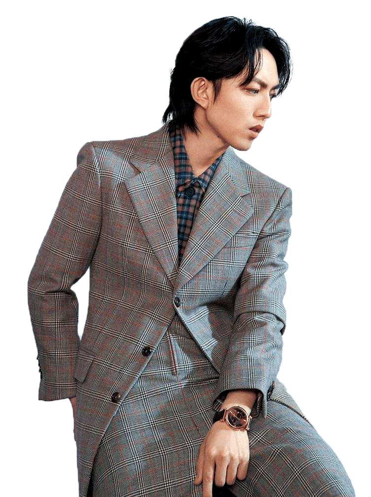

任賢齊
任贤齐（Richie Jen），1966年6月23日出生于台湾省彰化县，祖籍湖北武汉江夏区。中国台湾流行乐男歌手、演员、赛车手。1990年，发行音乐合辑《奔向彩虹》以歌手的身份正式出道。1991年，任贤齐首次出演电影《官兵捉强盗》进入演艺圈。1996年，凭借歌曲《心太软》为人们熟知 。1997年，《心太软》专辑荣获香港电台十大劲爆国语金曲铜奖、香港新城精选104电台国语金奖等奖项 。1998年，发行专辑《爱像太平洋》，专辑中的歌曲《对面的女孩看过来》获得HITFM台北之音音乐网100单曲票选活动的第一名，该歌曲也成为了他在歌唱事业上的代表作品；同年，出演电视剧《神雕侠侣》饰演杨过。
鼓鼓
鼓鼓，原名吕思纬，1984年4月28日生于台湾，中国台湾歌手、鼓手、DJ。曾任阿密特的鼓手、MP魔幻力量DJ。曾帮过萧敬腾,王心凌, FIR,五月天,张芸京等艺人制作DJ SCRATCH以及打鼓的部分。以老师的身分教过CIRCUS的一名成员LEO打鼓， 并在CIRCUSACTION4出现。前AMIT鼓手、骨头乐团、捌拾捌颗芭乐籽鼓手。2008年与另外五位好友组成MP魔幻力量乐团，任MP魔幻力量乐团DJ。2016年，鼓鼓发行了首张个人全创作专辑《MAKE IT REAL可以唷》。鼓鼓首张个人全创作专辑《MAKE IT REAL可以唷》。

黃品源
黄品源，1968年3月17日出生于台湾省台中市，中国台湾流行乐男歌手、演员、主持人。1987年，黄品源报名参加第一届青春之星校际音乐大赛，获得第二名，从而进入演艺圈。1990年，发行第一张个人专辑《男配角心声》。1999年，与莫文蔚合作发行歌曲《那么爱你为什么》。2000年10月，发行个人专辑《海浪》；12月，发行个人专辑《狠不下心》，同月获得香港十大中文金曲最受欢迎男歌手奖提名。2001年1月，凭借歌曲《那么爱你为什么》获得香港十大中文金曲优秀国语歌曲银奖。2002年，演唱的个人单曲《雨衣》获第三十九届台湾电影金马奖最佳原创电影歌曲奖。2003年8月，演唱的歌曲《小薇》获得香港新城国语力奖新城国语力歌曲。2004年，凭借节目《综艺大哥大》获得台湾电视金钟奖综艺节目主持人奖。

羅志祥
罗志祥（Show Lo），1979年7月30日出生于中国台湾省基隆市，华语流行男歌手、主持人、舞者、演员、“STAGE"老板。1994年出道，2003年罗志祥推出首张个人专辑《Show Time》。2005年举行首场个人演唱会，成为第一位踏上台北小巨蛋的流行歌手。2008年发行第六张专辑《潮男正传》，获MTV亚洲音乐大奖。2010年专辑《罗生门》获“五白金”。2012年前往日本乐坛发展，推出首张日文单曲《Dante》，《Dante》推出首周即登上日本公信榜单曲周榜第十名，使罗志祥成为首位于日本公信榜单曲获得前十名的台湾男歌手。13年第十张专辑《狮子吼》获认证四白金唱片，使罗志祥连续四年（2010—2013）成为台湾地区年度唱片销售总冠军。16年，开启个人第四次《CRAZY WORLD疯狂世界》世界巡回演唱会。

林宥嘉
林宥嘉（Yoga Lin），1987年7月1日出生于台湾省屏东县，华语流行乐男歌手、音乐制作人，毕业于国立东华大学。2007年，参加台湾歌唱节目《超级星光大道第一届》并获得总冠军；同年，签约华研国际音乐而正式出道。2008年，发行首张音乐专辑《神秘嘉宾》，获得IFPI香港唱片销量大奖十大销量国语唱片。2009年，发行第二张音乐专辑《感官/世界》，获得第10届CCTV-MTV音乐盛典港澳台地区年度最受欢迎潜力歌手奖。随后，凭借歌曲《说谎》在乐坛获得关注。2011年，发行第三张音乐专辑《美妙生活》，获得第17届新加坡金曲奖“年度专辑大奖”；同年，主演首部电影作品《醉后一夜》。2012年，发行第四张音乐专辑《大小说家》，获得中华音乐人交流协会“年度十大优良专辑”，并凭该专辑入围第24届台湾金曲奖最佳国语男歌手。
林俊傑
林俊杰（JJ Lin），1981年3月27日出生于新加坡，华语流行乐男歌手、词曲创作者、音乐制作人。2003年发行首张创作专辑《乐行者》。2004年凭专辑《第二天堂》中的歌曲《江南》获得广泛关注。2014年以专辑《因你而在》夺得第25届台湾金曲奖最佳国语男歌手奖。2016年以专辑《和自己对话》获得第27届台湾金曲奖最佳国语男歌手奖 ，并推出个人首部音乐纪录片《听·见林俊杰》。截止到2017年，已发行13张正式专辑，累计创作数百首歌曲。2007年成立个人音乐制作公司JFJ Productions。2008年创立潮流品牌SMG。2016年获得国际汽车联盟（FIA）职业赛车执照 。2017年成立“SMG”电竞战队。2004年、2015年两度受邀演唱新加坡国庆庆典主题曲 ，担任2008年北京奥运会 及2010年新加坡青奥会火炬手，创作并演唱2010年上海世博会新加坡馆主题曲《感动每一刻》。凭借在音乐创作与慈善公益事业等方面的表现，2009年荣获新加坡杰出青年奖 ，2014年获得第5届通商中国青年奖 。
五月天
五月天，中国台湾摇滚乐团，由温尚翊（怪兽）、陈信宏（阿信）、石锦航（石头）、蔡升晏（玛莎）、刘谚明（冠佑）组成。乐团前身为“So Band”乐团，在1997年3月29日更名为“五月天”。乐团至2016年，四次拿下"台湾金曲奖"和“最佳乐团奖”。1999年，发行首张专辑《第一张创作专辑》。2000年7月7日，发行了第二张创作专辑《爱情万岁》。2001年7月6日，推出暂别歌坛之作第三张创作专辑《人生海海》。2003年11月11日，发行第四张专辑《时光机》。2004年11月5日，推出第五张专辑《神的孩子都在跳舞》。2005年8月，推出精选辑《知足Just My Pride最真杰作选》。2006年12月29日，发行第六张专辑《为爱而生》。2008年10月23日，发行第七张专辑《后青春期的诗》。2011年12月16日，发行第八张专辑《第二人生》。2016年7月21日，发行第九张专辑《自传》。